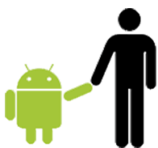

História do Mascote do Android
O que é Android, história, versões e evolução Em fevereiro de 2021, de cada 100 dispositivos que usam algum sistema operacional, mais de 40 fazem uso de alguma versão do Android. É o mais usado no mundo, considerando todas as plataformas, superando Windows, iOS, MacOS, Linux ou o sistema operacional que você conseguir se lembrar. São 15 anos desde que tudo começou, mas foi no já longínquo Março de 2017 que o sistema do robozinho verde alçou a posição de líder entre todos os sistemas operacionais (mobile ou desktop) e só a perdeu por algumas semanas em 2020.
A primeira versão
Conhecer um pouco da história dos smartphones e até do seu concorrente direto – o iOS – ajuda a entender sua trajetória de sucesso e sua importância na inclusão digital. História do Android Dan Morrill. Em janeiro de 2007 Steve Jobs anunciava a chegada do iPhone e em parte ajudou aquele que anos mais tarde viria a ser o sistema operacional mais usado no mundo. Até então, marcas como Blackberry, Nokia, Ericsson, Palm e Motorola, tinham seus próprios sistemas operacionais, os quais equipavam seus próprios aparelhos celulares. Mas segundo Steve Jobs, na apresentação do iPhone na MacWorld, realizada em São Francisco, os aparelhos celulares na época, eram grandes e pesados. Seus teclados físicos ocupavam muito espaço, tinham muitos botões que tornavam seu uso complicado e também por essa razão, tinham telas pequenas. Inkscape

Na apresentação ele até isolou uma imagem na qual apareciam quatro aparelhos da Motorola, Blackberry, Palm e Nokia e que mostrava que cerca de metade da área frontal dos aparelhos era reservada aos botões.
Surge um novo Mascote
Esse era o primeiro paradigma que o iPhone derrubava, ao abandonar os teclados físicos por meio de uma interface que permitia fazer tudo em uma tela maior e sensível ao toque. No uso de aplicativos que exigissem digitação, um teclado virtual e inteligente ficava disponível.
A origem do Android Ao contrário do que muita gente pensa, o Android não é criação do Google. Irina Block Em 2005, o gigante de Mountain View que vinha comprando uma série de startups, comprou a empresa criadora do Android, uma empresa nascida em 2003, que inicialmente desenvolveu um sistema operacional inteligente para câmeras digitais, mas que logo enxergou um potencial maior no sistema, ampliando sua utilidade e características para que pudesse servir como sistema para celulares. Dandroid
Ao abandonar a ideia original e focar em um sistema para smartphones, a proposta era ser apenas mais uma opção em um mercado que tinha até o momento como principais nomes, o Symbian (Nokia) e Windows Mobile (Microsoft). Bugdroid Mas a compra por parte do Google, mudou um pouco os planos e pouco se sabe ao certo do que ocorreu naquele intervalo de tempo, exceto que um dos fundadores da empresa – o programador e desenvolvedor Andy Rubin – permaneceu a frente da equipe de desenvolvimento que usaria uma plataforma já conhecida.
O desenvolvimento do Android O lançamento e sucesso logo de início do iPhone e os conceitos que faziam parte do seu sistema operacional, deram